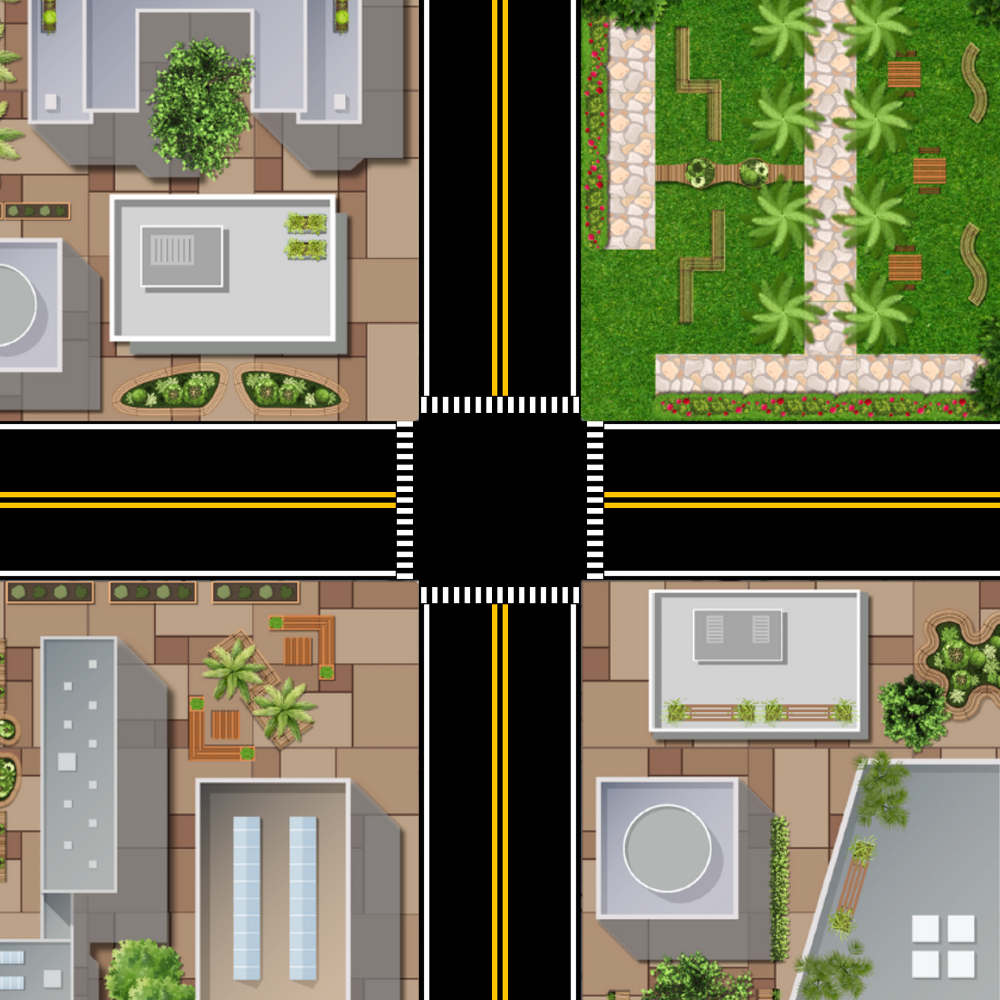

A Python-based traffic simulation modeling vehicle movement, intersection timing, and congestion. Developed by Andrie Deuna.

This simulation runs locally using Python and Pygame — it cannot run in a browser. To run it yourself, clone the repository and execute the main script.
View on GitHub